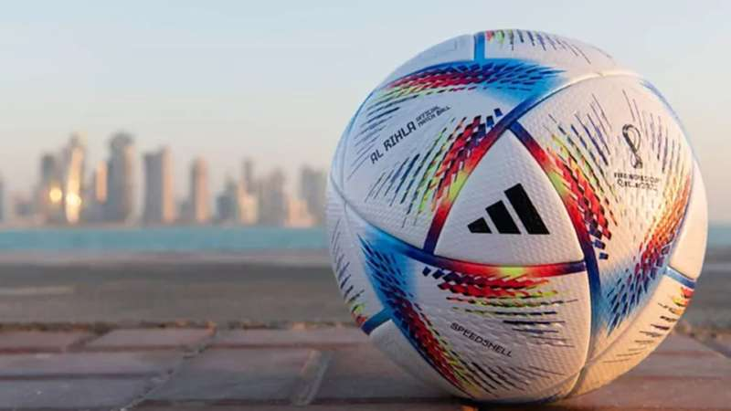

La Copa Mundial de Fútbol de la FIFA Catar 2022 (en árabe, كأس العالم لكرة القدم قطر 2022) será la XXII edición de la Copa Mundial de Fútbol masculino organizada por la FIFA. Se desarrollará desde el 20 de noviembre al 18 de diciembre en Catar, que consiguió los derechos de organización el 2 de diciembre de 2010
Al Rihla significa “el viaje” en árabe, y se inspira en la cultura, la arquitectura, las emblemáticas embarcaciones y la bandera de Qatar. Los colores vivos y llamativos sobre un fondo perlado representan al país anfitrión del Mundial.
El Estadio de Lusail, inspirado en la danza de luces y sombras de los tradicionales fanales, será el escenario del partido más importante del fútbol mundial: la final de la Copa Mundial de la FIFA Catar 2022™.

| Pais | Año |
|---|---|
| Brasil | 1958, 1962, 1970, 1994, 2002 |
| Alemania | 1954, 1974, 1990, 2014 |
| Italia | 1934, 1938, 1982, 2006 |
| Argentina | 1978, 1986 |
| Francia | 1998, 2018 |
| Uruguay | 1930, 1950 |
| Inglaterra | 1966 |
| España | 2010 |
La actual Copa del Mundo es un trofeo de más de seis kilogramos entregado al campeón del mundial, coronado cada cuatro años. Pese a ser el más reconocido, este trofeo se empezó a entregar en 1974, siendo el Trofeo Jules Rimet el galardón original.